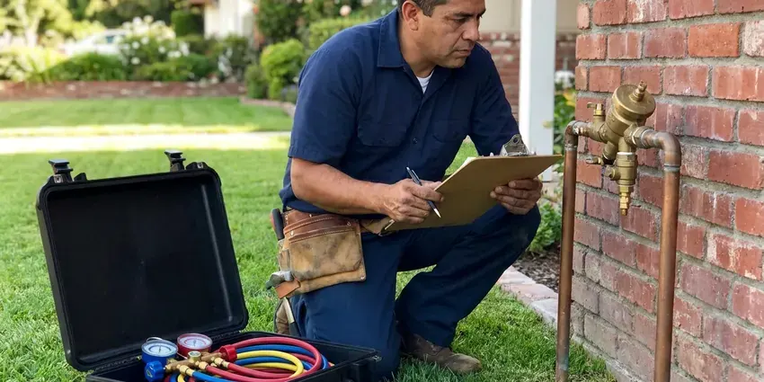

Basement Leak Repair in Midwest City, OK
Don't let basement leaks weaken your home's foundation. Our Midwest City, OK team offers quick and effective solutions for all types of basement water intrusion.
- Same-Day Leak Tracing
- Licensed and Insured
- Accurate Leak Detection
- Foundation Experts

Dry Out Your Basement for Good With Our Leak Pros in Midwest City, OK.
Our team is ready to provide dependable basement leak solutions to keep your Midwest City home dry and secure.
Reliable Basement Leak Repair for Homes With Lower Levels in Midwest City, OK
JBK Plumbing serves the hillside homes, older houses and custom builds around Midwest City that have finished or unfinished basements. We handle the plumbing side of the repair and help you plan grading, sump or drain improvements when outside water is the cause.
Our expertise includes:
- Hydrostatic pressure relief solutions
- Foundation Crack Injection Systems
- Thermal imaging and moisture mapping to find hidden basement leaks

Additional Plumbing Maintenance Services in Midwest City, OK
Our maintenance and specialty plumbing services in Midwest City, OK catch small problems before they become emergencies.


Customers
Why Choose JBK Plumbing for Basement Leak Repair in Midwest City, OK?
Our crew handles the plumbing repair and the drainage fixes that keep water away from the foundation. You get one team that understands both sides of the issue.
- Property Protection, We protect your home from mold growth, structural damage, and costly repairs associated with basement leaks.
- Lasting Solutions, Our repairs are designed to hold up to Oklahoma weather, including heavy rains and changing soil moisture.
- Accurate Diagnosis, We pinpoint the exact cause of your basement leak, whether it's a foundation crack, pipe leak, or drainage issue.
Citywide Coverage
Lower levels are scattered across Midwest City, from walkout basements on sloped lots to small mechanical cellars under older homes. We cover all of them and know how local soils behave around each type.
Experienced Team
Our team consists of well trained plumbing professionals with extensive experience in basement leak detection and repair. They are experts in identifying the exact source of water intrusion, from foundation cracks to faulty drainage systems.
Safety-First Approach
All our repairs are performed to strict industry standards and comply with local Oklahoma building codes, ensuring the structural integrity of your home and preventing future issues.
Trusted Certified Midwest City Plumbing Services Professionals
At JBK Plumbing, we take pride in providing certified plumbing services throughout Midwest City, OK. Backed by recognized industry credentials, our experienced plumbers combine technical skill with genuine customer care. Whether it is repair, installation, or maintenance, we follow strict safety and quality standards to deliver long-lasting results you can trust.
Call Us Now PHCC Plumbing Contractor Recognition
PHCC Plumbing Contractor Recognition Better Business Bureau (BBB) Accreditation
Better Business Bureau (BBB) Accreditation Angi Certified Pro
Angi Certified Pro ISO 9001 Quality Management Certification
ISO 9001 Quality Management CertificationReliable Basement Leak Repair Services in Midwest City, OK
Commercial Basement Waterproofing in Midwest City
Commercial properties in Midwest City also face the risk of basement leaks, which can damage inventory and equipment and interrupt business operations. JBK Plumbing offers specialized commercial basement leak repair services, providing robust and scalable solutions tailored to the demands of business establishments. We minimize downtime and protect your assets with prompt, professional service.

Emergency Basement Flooding Response in Midwest City
A burst pipe or a failed sump during a storm can put inches of water on the floor in minutes. Call us and shut off the main water valve if you can do so safely. We stop the leak, pump out standing water from the plumbing failure and make the system safe. We can also point you to drying and restoration crews when the damage calls for it.
Waterproofing for Older Oklahoma Homes in Midwest City, OK
Many older homes in Midwest City and across Oklahoma were not built with modern waterproofing techniques, making them more prone to basement leaks. Homes built from the late 1970s into the mid 1990s may have polybutylene supply lines, which are known for sudden leaks. JBK Plumbing specializes in retrofitting older foundations with current solutions, addressing issues like failing mortar, porous concrete, and inadequate drainage. We preserve the integrity of historic structures while providing modern protection.
Emergency Basement Leak Repair in Midwest City, OK
A sudden basement leak can be a crisis, especially during heavy rains. JBK Plumbing provides emergency basement leak repair services in Midwest City, OK to address urgent water intrusion issues fast. Our fast response team is equipped to perform immediate diagnostics and temporary or permanent repairs, preventing further damage to your property and belongings.
Exterior Waterproofing in Midwest City, OK
For a more complete solution, we offer exterior waterproofing, which involves excavating around your foundation, applying a waterproof membrane, and installing drainage boards. This method creates an impermeable barrier on the outside of your basement walls, providing strong protection against water intrusion. Summer heat dries out clay soil around foundations, which can shift slabs and stress the plumbing beneath them.
Wall and Slab Seepage Repair in Midwest City
When water enters through foundation walls or the slab joint, the cause is most often surface water pooling against the house. Expansive red clay is common in Oklahoma, swelling when wet and shrinking in drought, which shifts foundations and buried pipe. Dense or saturated soil can hold water near the foundation instead of letting it drain away. We seal penetrations where pipes pass through the wall and can install interior drain channels that carry seepage to a sump. We also suggest grading and gutter changes when outside water is the root cause.
Supply Line Leak Repair in Midwest City
Water lines that run along basement ceilings and walls can leak at fittings, valves or pinholes. Many rural homes rely on private wells, and some groundwater carries high mineral content that calls for softening or filtration. Water chemistry affects how fast copper corrodes, and older galvanized lines frequently rust from the inside. We locate the leak, replace the damaged section with copper or PEX and pressure test the repair. If the line shows widespread wear, we will tell you whether a partial repipe makes more sense.

Clogged Drain Tile Repair in Midwest City
Interior or exterior drain tile systems can become clogged with sediment or tree roots over time, rendering them ineffective. We focus on diagnosing and clearing blockages in these critical drainage systems, restoring their ability to divert water away from your basement walls and foundation in Midwest City.
Basement Leak Repair Near Me in Midwest City, OK
Choosing a local expert like JBK Plumbing means you get a team familiar with Midwest City's plumbing and foundation needs. We're your neighbors, focused on providing quality basement leak repair solutions right here in your community.
A local plumber also understands how the soil and storms around Midwest City affect lower levels. Expansive red clay is common in Oklahoma, swelling when wet and shrinking in drought, which shifts foundations and buried pipe. We factor those conditions into every repair we recommend.
JBK Plumbing at a Glance
- Fully licensed plumbing team covering Midwest City, OK
- 24/7 emergency service with same-day scheduling
- Clear written estimates, no hidden fees
- 4.8-star rated by 318+ Oklahoma customers
Midwest City Map
Midwest City Information
- Population
- 58,086
- Area codes
- 405/580/918
- Service area
- Midwest City and communities within 40 miles
- Nearby
- Oklahoma City, Moore, Edmond, Norman
Basements in Midwest City, OK can take on water from storm runoff, saturated soil and corroded pipes, so leaks need to be traced to the real source to stay fixed. Many rural homes rely on private wells, and some groundwater carries high mineral content that calls for softening or filtration.
Expert Services
Trust our professionals for reliable JBK Plumbing solutions in Midwest City, OK.
Our Specialized Plumbing Services in Midwest City, OK
At JBK Plumbing, we provide a complete range of plumbing services across Midwest City, OK. From leak detection to full system installations, our team ensures fast, precise, and affordable service for both residential and commercial properties. Explore our core services below:


How Our Basement Leak Repair Process Works in Midwest City, OK
Our basement leak repair process is designed for clarity and results, ensuring a lasting solution for your Midwest City home.
Request a Quote
Call (405) 507-8396 and describe where you see water and when it appears. We schedule a visit, frequently the same day, and explain our inspection fee up front.
Trace the Source
Our technician uses moisture meters, thermal imaging and pressure or dye tests to isolate the leak. We show you what we found and give you clear repair options.
Repair and Verify
We make the repair, then retest the line or drain under real use. You get a summary of the work and tips to keep the basement dry.
Frequently Asked Questions About Basement Leak Repair in Midwest City
Most basement plumbing leak repairs in Midwest City cost $200 to $1,500, depending on the pipe and how hard it is to reach. Sump pump replacements run $600 to $1,800, and full interior drainage systems cost more. We give you a firm price before work starts.
Prevention involves proper grading around your foundation, ensuring gutters and downspouts divert water away from the house, maintaining a clear drainage system, and regularly checking for foundation cracks. Consider planned landscaping solutions and annual plumbing inspections by JBK Plumbing to help prevent future issues in Midwest City.
Yes, JBK Plumbing stands behind the quality of our work. We offer solid warranties on our basement leak repair services, with specific terms depending on the type of repair and materials used. We will discuss the warranty details with you during your service agreement.
Yes. A small drip behind finished walls can rot framing, ruin flooring and grow mold within weeks. Catching it early keeps the repair small and the cost down.
Plumbing leaks typically show up regardless of weather and often make your water meter move when everything is off. Seepage tends to appear after storms, snowmelt or heavy irrigation. We confirm with meter, pressure and moisture tests.
We prioritize high-quality, reliable brands known for their durability and performance in basement waterproofing. This includes trusted names for epoxy and polyurethane injection materials, as well as reputable sump pump brands like Zoeller, Little Giant, and Liberty Pumps. Our material selection is based on the specific needs of your Midwest City property.
While some very minor leaks might seem like a DIY project, most basement leaks are complex and call for professional expertise. Improper repairs can lead to more extensive damage, structural issues, and costly re-repairs. Professional plumbers and foundation specialists have the right tools and knowledge to provide lasting solutions.
Yes, our repairs carry a workmanship warranty, and new pumps and parts include the manufacturer warranty. We put the warranty terms in writing on your invoice. If the same repair fails, we return to fix it.
What People Are Saying About Our Plumbing Experts?

Laura S.
I scheduled a water heater replacement, and the team made the process smooth and affordable. The new unit works perfectly, and they cleaned up after completing the job.
Water Heater Replacement · Shawnee, OK
James P.
Our commercial plumbing system had a leak under the sink, and JBK Plumbing handled it professionally. The plumbers arrived quickly and restored everything without disruption to our customers.
Commercial Plumbing · Moore, OK
Daniel K.
A pipe burst at 11 pm and they actually answered. The plumber showed up within the hour, shut everything down, and had us back to normal the next morning. Could not ask for more.
Emergency Plumbing · Shawnee, OKRobert G.
The trenchless sewer replacement saved our front yard. They walked us through the camera inspection footage first so we knew exactly what we were paying for.
Sewer Line Replacement · Oklahoma City, OK
Emily R.
I called JBK Plumbing for plumbing repair, and the technician was fast, polite, and thorough. They explained the problem clearly and fixed it the same day. I will definitely hire them again. Highly recommended!
Plumbing Repair · Shawnee, OK
Mark T.
When our office needed drain cleaning, JBK Plumbing provided quick, reliable service. The plumber arrived on time and made sure every drain flowed perfectly before leaving. Very satisfied.
Drain Cleaning · Moore, OK